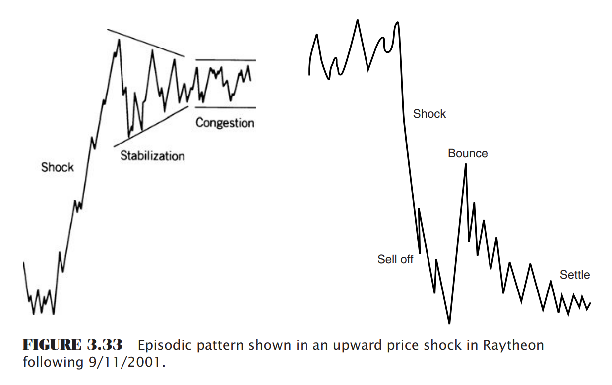

There is little argument that all prices change quickly in response to unexpected news. The transition from one major level to another is termed an episodic pattern; when these transitions are violent, they are called price shocks. Until the late 1990s, there were very few price shocks in the stock market, the greatest being the one resulting from the terrorist attacks of September 11, 2001. Otherwise, price shocks can be caused by a surprising election result, the unexpected raising of interest rates by the Federal Reserve, the devaluation of a currency by an important Third World nation, sudden crop loss or natural disaster, or an assassination (or what we now call a geopolitical event). While price shocks are most common in futures markets, all markets are continually adjusting to new price levels, and all experience occasional surprises. Each news article, government economic release, or earnings report can be considered a mini-shock. A common price shock occurs when a pharmaceutical company’s application for a new drug is unexpectedly rejected by the U.S. Department of Agriculture (USDA).
The pattern that results from episodic movement is exactly what one might expect. Following the sharp price movement, there is a period when volatility declines from its highs, narrowing until a normal volatility level is found and remaining at that level. In the Raytheon reaction to 9/11, the upwards price shock, shown in Figure 3.33 is followed by a volatile, unstable few days and then a steady decline in volatility as some level of equilibrium is found. The Raytheon price reacted opposite to most other stocks because it is a defense contractor, and a terrorist attack implies an increased amount of business from the government.
Unless the news that caused the price shock was an error, in which case prices immediately move back to levels prior to the news, prices will settle in a new trading range near the extreme highs or lows. It will take time for the market to absorb the consequences of the news, and many traders will fi nd the risk too high to participate.
Price shocks have become the focus of much analytic work. Because a price shock is an unpredictable event, it cannot be forecast. This has a critical effect on the way in which systems are developed, especially with regard to the testing procedures. We understand at the time of the price shock that the event was entirely unexpected. However, years later, when the same prices are analyzed using a computer program, you might find that a trend or charting pattern predicted this move. The analysis records the profits as though they were predictable and you are now basing your conclusions on a false premise. These important issues are covered in other parts of this book under the topics “Price Shocks,” “Searching for Robustness,” and “Optimization,” found in Chapters 21 and 22.
You're now ready to [link:#api/en/tsm/charting/price-objectives Price Objectives for Bar Charting].